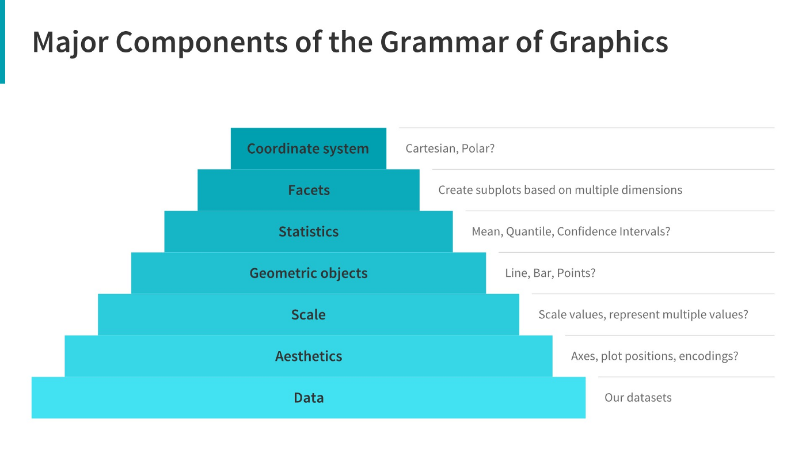

install.packages("ggplot2") #only needs to happen once - Do not include in Quarto documents!Introduction to ggplot2
The greatest possibilities of visual display lie in vividness and inescapability of the intended message. A visual display can stop your mental flow in its tracks and make you think. A visual display can force you to notice what you never expected to see. (“Why, that scatter diagram has a hole in the middle!”) – John Tukey, Data Based Graphics: Visual Display in the Decades to Come
📖 Readings: 45 minutes
💻 Activities: 45-60 minutes
- You’ll be working through a series of tutorials helping you practice making plots with ggplot.
✅ Check-ins: 8 questions broken out by sections
0.1 Learning Objectives
- Describe charts using the grammar of graphics
- Create layered graphics that highlight multiple aspects of the data
- Evaluate existing charts and develop new versions that improve accessibility and readability
0.2 Loading in the ggplot2 Package
In this class, we’re going to use the ggplot2 package to create graphics in R. This package is already installed as part of the tidyverse, but can be installed:
and/or loaded:
library("ggplot2")
# alternatively
library("tidyverse") # (my preference!)
1 Data Visualization with ggplot2
This coursework will walk you through the different sections of Chapter One and Nine in R for Data Science.
📖 Required Reading: Data Visualization.
1.1 The Grammar of Graphics
The grammar of graphics is an approach first introduced in Leland Wilkinson’s book (Wilkinson 2005). Unlike other graphics classification schemes, the grammar of graphics makes an attempt to describe how the data set itself relates to the components of the chart.
This has a few advantages:
- It’s relatively easy to represent the same data set with different types of plots (and to find their strengths and weaknesses)
- Grammar leads to a concise description of the plot and its contents
- We can add layers to modify the graphics, each with their own basic grammar (just like we combine sentences and clauses to build a rich, descriptive paragraph)

1.2 Making Your First ggplot
✅ Check-in
Question 1 – What specifically does the code ggplot(data = mpg) do?
- Creates a blank plot
- Makes a scatterplot of the first two variables in the
mpgdataset - Creates a ggplot with the
mpgdataset
1.3 Aesthetics
📖 Required Reading: Layers - Aesthetic Mappings.
✅ Check-in
ggplot(data = mpg) +
geom_point(mapping = aes(x = displ, y = hwy), color = "blue")Question 2: What aesthetics does this plot contain?
- x
- y
- color
- data
Question 3: Which of the following changes would set the color of the points to be blue?
## Option A
ggplot(data = mpg) +
geom_point(
mapping = aes(x = displ,
y = hwy,
color = blue)
)
## Option B
ggplot(data = mpg) +
geom_point(
mapping = aes(x = displ,
y = hwy),
color = "blue"
)
## Option C
ggplot(data = mpg,
mapping = aes(color = "blue")
) +
geom_point(
mapping = aes(x = displ,
y = hwy)
)1.4 geoms
What type of chart to use?
It can be hard to know what type of chart to use for a particular type of data. I recommend figuring out what you want to show first, and then thinking about how to show that data with an appropriate plot type. Consider the following factors:
What type of variable is
x? Categorical? Continuous? Discrete?What type of variable is
y?How many observations do I have for each
x/yvariable?Are there any important moderating variables?
Do I have data that might be best shown in small multiples? E.g. a categorical moderating variable and a lot of data, where the categorical variable might be important for showing different features of the data?
Once you’ve thought through this, take a look through catalogs like the R Graph Gallery to see what visualizations match your data and use-case.
📖 Required Reading: Layers - Geometric Objects.
💻 Required Tutorials
✅ Check-in
Question 4: Match each plot with the geom_XXX() function used to create it!
- Line Chart
- Boxplot
- Histogram
- Area Chart
geom_boxplot()geom_point()geom_hist()geom_bar()geom_smooth()geom_point()geom_area()geom_line()geom_histogram()
1.5 Getting a Bit Fancier
In this section we dig a bit deeper into how we can make our code more efficient and other ways we can add additional variables to our plots.
Global vs. local aesthetics
The aesthetic mappings that are defined in ggplot() are the global level aesthetics, that is they are inherited by each of the subsequent geom_ layers of the plot. However, each geom_ function in ggplot2 can also take its own mapping arguments, which allows for aesthetic mappings at the local level that are combined with those inherited from the global level.
✅ Check-in
Question 5: Match the code to the type of aesthetics that are being used:
Global
Local
ggplot(data = mpg,
mapping = aes(x = mpg, y = hwy)
) +
geom_point()ggplot(data = mpg) +
geom_point(mapping = aes(x = mpg, y = hwy))1.6 Facets
1.7 Data transformations
1.8 Changing the positions of bars
📖 Required Reading: Layers - Position Adjustments.
✅ Check-in
Question 6: What arguments for geom_jitter() control the amount of jittering?
- width
- height
- stat
- position
- na.rm
- show.legend
- data
- mapping
1.9 Plot Customizations
📖 Required Reading: Communication
✅ Check-in
Question 7: What can the labs() function do? Select all that apply.
- Customize the x-axis label
- Customize the y-axis label
- Customize the legend label
- Customize the plot title
- Add a caption to the plot
References
Sarkar, Dipanjan (DJ). 2018. “A Comprehensive Guide to the Grammar of Graphics for Effective Visualization of Multi-Dimensional….” Medium. https://towardsdatascience.com/a-comprehensive-guide-to-the-grammar-of-graphics-for-effective-visualization-of-multi-dimensional-1f92b4ed4149.
Wilkinson, Leland. 2005. The Grammar of Graphics. 2nd ed. Statistics and Computing. New York: Springer Science.